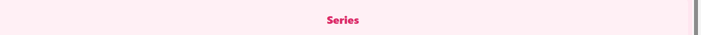
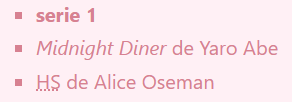
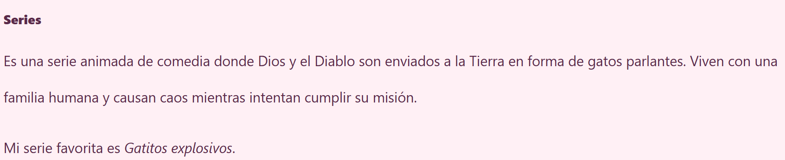

Selector Universal
Este selector aplica estilos a todos los elementos del sitio. Es como una base suave que armoniza todo el diseño.


Selector de tipo
Este selector estiliza todos los elementos <h2>, dándoles color y alineación. Es como pintar los títulos con emoción.


Selector por ID
Este selector aplica estilos a un elemento único con el identificador #favorita. Es como enmarcar tu pasatiempo más querido.


Selector por clase
Este selector estiliza todos los elementos con la clase .detalle. Es como dar un susurro poético a las frases importantes.


Selector de atributo
Este selector aplica estilos a todas las imágenes que tienen el atributo alt. Es como darles un marco suave y sombra delicada.


Selector de lista
Este selector estiliza todos los elementos <li>. Les da forma y color, como pétalos en una lista emocional.


Selector de descendientes
Este selector aplica estilos a los párrafos dentro de una sección. Es como cuidar el ritmo y la voz de cada texto.


Selector de hijos directos
Este selector aplica estilos a los elementos <ul> que son hijos directos de <nav>. Es como decorar el menú con suavidad.


Selector hermano adyacente
Este selector estiliza el párrafo que aparece justo después de un <h2>. Es como una nota que acompaña al título.


Selector hermano general
Este selector aplica estilos a todos los párrafos que son hermanos del <h2>, aunque no estén justo después. Es como una melodía que se repite en distintos momentos.